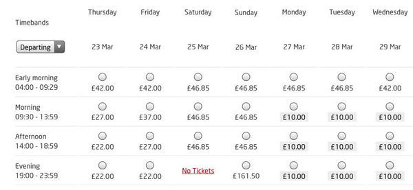
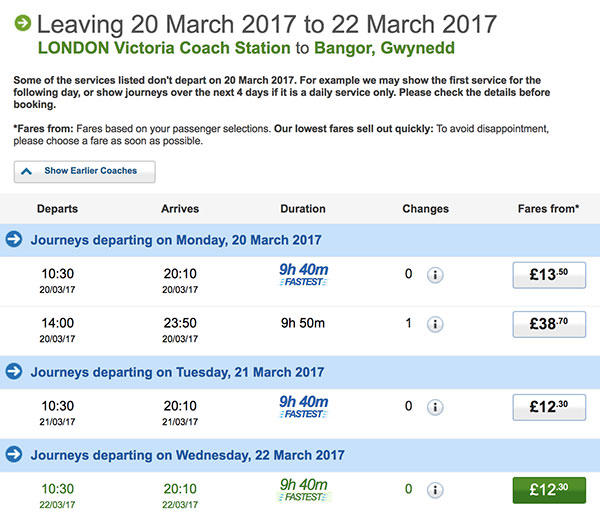

It depends what are your standards and expectations. We believe we are strategically located and surrounded by divine nature.
BTW - Gwyneed - is a Welsh name. Many signs in Wales have double names.
3h06m from London Euston to Bangor (Gwynedd) - http://ojp.nationalrail.co.uk/service/timesandfares/EUS/BNG/tomorrow/0630/dep?directonly - could be as little as £10 one-way when booked in advance.
In reality it's difficult to plan that far in the future. There is a more flexible ticket "off-peak return" - £93 for return that is valid for a month. It's £92 for one way and £93 for return so even if you are 100% sure that you need one way ticket only please buy return and someone in the chapel might be able to use it.
There is only one restriction in place - cannot return to London on the 5am or 6am train - that probably doesn't apply to you anyway. Trains in the UK are organised so that if you work and have commute to the office they'll extract every penny... Otherwise taking off-peak trains provide much better value.
We suggest direct trains because they are more convenient. Sometimes on Sundays there are planned engineering works and small portion of the way is via bus. Not ideal but not end of the world, everything is neatly organised and signposted so don't worry.
If you are lucky you could get a ticket for £10
Book your travel at National Express - it takes considerably longer but it's considerably cheaper
From Bangor station there is a bus service - https://www.gwynedd.llyw.cymru/en/Residents/Parking-roads-and-travel/Bus-timetables/Bus-timetables.aspx - it's not very frequent though and it's better to arrange your visit so that we could pick you up or just use a taxi.
86 miles from Liverpool aiport, 93 miles from Manchester airport - it might be practical to find some cheap airline flying there. Then you are likely to pay less for the train fare.
In a way: YES. We will be working, we will be open and social. The coworking is not the core focus though, we are creating the environment to realise human potential and living, eating, breathing, working is part of it.
Nope. Only a few meters. There is potentially land available near by. We also have friends a few miles away - organic farm - they are expert organic farmers with an aligned vision. They concentrate on build a community around growning food. We'd focussed on Innovation and Cultural work
At the moment we have an ADSL connection of about 5Mbps. It's general fine for small numbers of people not doing heavy lifting.
The good news is that FTTP (Fibre to the Premises) has recently become available and in fact there is already a fibre connected to the pole outside the chapel. We expect to switch to FTTP soon.